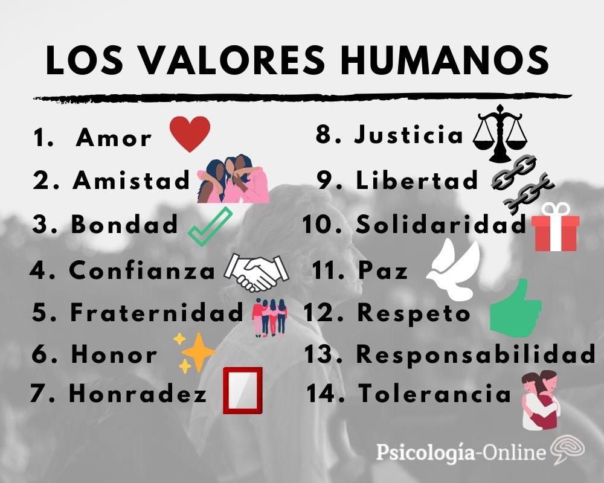

LOS VALORES EN MI ENTORNO SOCIAL
EN LAS ULTIMAS DECADAS SE A GENARELIZADO UNA CARENCIA Y DESCONOCIMIENTO DE LOS VALORES UNIVERSALES Y DESCONOCIMIENTOS DE LOS VALORES UNIVERSALES. EN LA SOCIEDAD ACTUAL, ES UNA DE LAS PROBLEMATICAS QUE TIENE SU ORIGENEN EL CONTEXTO DEL HOGAR Y SE VE INFLUNCIADOPOR LA SOCIEADAD EN DONDE SE DESEMBUELVE ¿POR RQUE ES NECESARIO APLICAR VALORES SIMPLES RESPETO Y RESPONSABILIDAD LAS FALTAS DEE CONDUCTAS IDENTIFICADAS EN LAS AULAS DE NOTAN ESA CARENCIA QUE ENTORPESEN EL APRENDISAJE Y COMPARTAMIENTO EN EL AULA . LOS RESULTADOS EN TRABAJO SOCIAL NOSDAN UN INDISE EN PROMEDIO DE 1000 INCEDIENCIAS POIR DIVERSOS TEMAS EN LOS QUE DESTACAN :SU NEGACION APOPRTAREWL UNIFORME CORRECTAMENTE EL USO EXECIVO DE MAQUILLAJE EN LAS ALUMNAS EL CABELLO SUELTO Y EN VARONES EL CORTE DECABELLO ,FALTA DE MATERIALES DIRACTICOS ,INPUNTUALIDADEN CLASE Y ANSUSISTEMO DEL TURNO VESPERTINO ¿COMO REFORSAR LOS VALORES NESESARIOS PARA FORMAR CIODADANOS LIBRES Y DE CONTEXTO SOCIAL 
¿QUE ES EL ACOSO ESCOLAR?
se debe promover la comunicacion abierta establese reglas claras y fomentar la colaboracion
y la empatia atravez de actividades grupales tambien es fundamental aborde de los valores como la igualdad
empatia la inclucion etc. avisar a personas de confiansa como mamá, papá, la policia, ect. ya que las amenasas y la agrecion fisica
son encotra de la ley este trabajo fue realiza por los alumnos Alain Giovani Marquez y Melissa Ramirez Alpizar de 2°C
¿COMO FOMENTAR AULAS LIBRES SIN VIOLENCIA?

¿QUE HACER EN CASO DE VER SITUACIONES O SUFRIR ACOSO?